Riješeni ispiti 2021–2024 · STM32F407 · PicoBlaze · VHDL · FPGA
Brzi podsjetnik na formule, registre i korake koji se ponavljaju iz godine u godinu.
2^k · n bitova (k ulaza, n izlaza)LOAD = f · T − 1, gdje je f = AHB/8LOAD=5249=0x1481LOAD=20999=0x5207MODER: 00 ulaz · 01 izlaz · 10 alt · 11 analogOTYPER: 0 push-pull · 1 open-drainOSPEEDR: brzina (11 = najbrže)PUPDR: 01 pull-up · 10 pull-down&= očisti, |= postaviSYSCFGSYSCFG→EXTICR = odabir porta za linijuRTSR (rastući) / FTSR (padajući brid)IMR = otključaj (unmask) linijuNVIC_SetPriority + NVIC_EnableIRQEXTI→PR upisom 1!FLASH_ACR.LATENCY (najniža 3 bita)TEST sX, FF → C=1 ako neparan br. jedinicaAND sX, 01 + JUMP ZSUB sX,01 + XOR sX,FFreset u sensitivity listi, provjera prije rising_edge(clk)with…select, "uvjetna" = when…elseport_id, in_port, out_port, read_strobe, write_strobeveličina = 2k · n (bitova)| k (ulaza) | n (izlaza) | Veličina |
|---|---|---|
| 8 | 32 | 2⁸·32 = 256·32 = 8192 bita |
| 8 | 16 | 2⁸·16 = 256·16 = 4096 bita |
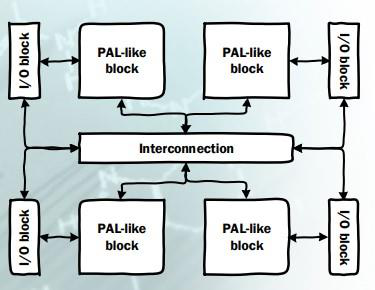
port_id).address, instruction, port_id, in_port, out_port, read_strobe, write_strobe, interrupt, interrupt_ack, reset, clk.TEST sX, kk radi AND nad podacima (ne sprema rezultat,
samo postavlja zastavice). C = 1 ako je broj jedinica u rezultatu neparan (paritet) →
koristi se za ispitivanje pariteta. Z = 1 ako su svi bitovi rezultata 0.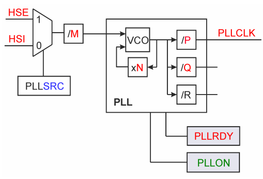
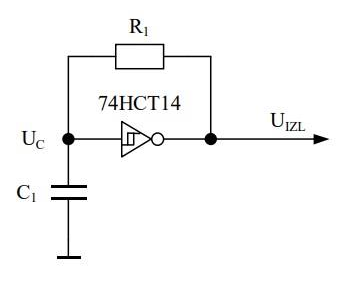
FLASH_ACR, polje LATENCY (najniža 3 bita).
| Povećavamo HCLK ↑ | Smanjujemo HCLK ↓ |
|---|---|
| 1. Postavi veći WS u LATENCY 2. Čekaj dok LATENCY ne pročita zadani WS 3. Tek onda povećaj frekvenciju |
1. Prvo smanji frekvenciju 2. Postavi manji WS u LATENCY 3. Čekaj dok LATENCY ne pročita zadani WS |
| Naziv | Veličina | Poravnanje (adresa počinje na…) |
|---|---|---|
| byte (bajt) | 8 bita | bilo koja adresa |
| halfword (poluriječ) | 16 bita | parna adresa (0,2,4…) |
| word (riječ) | 32 bita | višekratnik 4 (0,4,8,12…) |
| doubleword | 64 bita | višekratnik 8 |
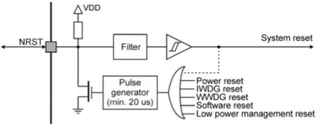
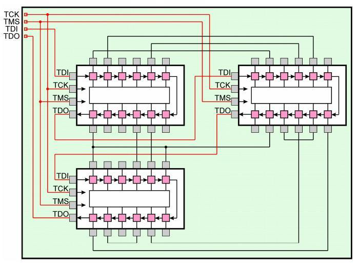
std_logic) ili vektori (std_logic_vector) i koliko bita. Tu se deklarira i CLK.
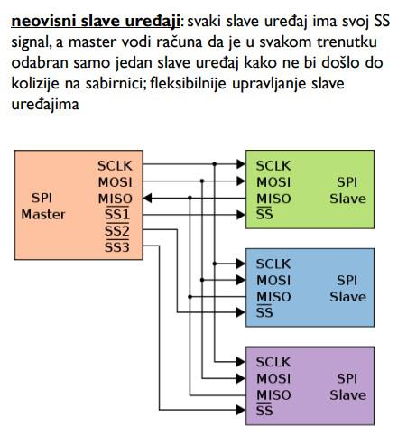
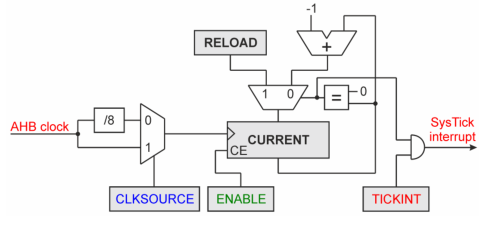
STK_LOAD
do nule, generira prekid i automatski se ponovo učita na RELOAD vrijednost.
STK_VAL) — trenutna vrijednost.STK_LOAD) — vrijednost ponovnog učitavanja.| Registar | Offset | Uloga |
|---|---|---|
| STK_CTRL | 0x00 | kontrola: ENABLE, TICKINT, CLKSOURCE |
| STK_LOAD | 0x04 | vrijednost ponovnog učitavanja |
| STK_VAL | 0x08 | trenutna vrijednost |
| STK_CALIB | 0x0C | kalibracija |
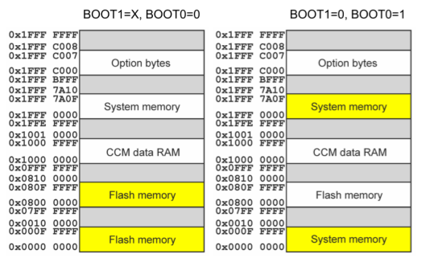
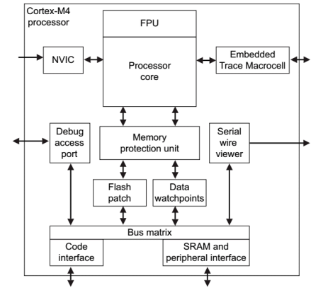
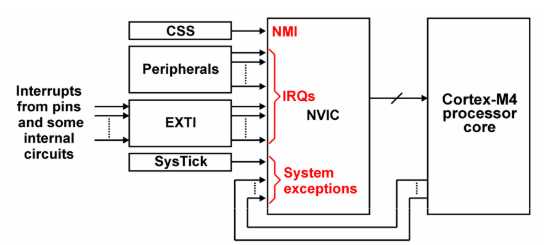
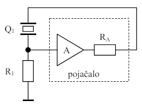
PLLCFGR: PLLM, PLLN, PLLP…).CFGR: AHB, APB1, APB2 prescaler).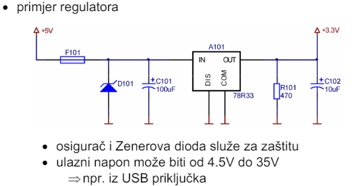
scanf()/printf()
s retargetingom (semihost). Dane su init_GPIOD(), init_GPIOE(), Pause(ms).fputc) treba osigurati da zvučnik pišti
— printf-u dajemo ono što treba "ispisati", a fputc paljenjem/gašenjem GPIOE11 generira ton. Argument
printf-a NIJE direktno paljenje zvučnika, nego pištanje (broj tonova/trajanje).// retarget.c
#include <stdio.h>
#include <rt_sys.h>
extern void Pause(unsigned int);
__asm(".global __use_no_semihosting");
// čitanje 3-bitne vrijednosti s GPIOD0-GPIOD2
int fgetc(FILE *f){
(void)f;
return (GPIOD->IDR & 0x00000007); // maska bita 0-2
}
// "ispis" = generiranje tona na GPIOE11. printf šalje JEDAN znak:
// 'S' = kratak (500 ms), 'L' = dugačak (2000 ms)
int fputc(int c, FILE *f){
(void)f;
unsigned int trajanje = (c == 'L') ? 2000 : 500;
GPIOE->ODR |= (1UL << 11); // upali zvučnik (pišti)
Pause(trajanje); // drži ton (kratak/dugačak)
GPIOE->ODR &= ~(1UL << 11); // ugasi zvučnik
return c;
}
int ferror(FILE *f){ (void)f; return 0; }
__attribute__((noreturn)) void _sys_exit(int rc){ (void)rc; while(1); }#include <stm32f407xx.h>
#include <stdio.h>
extern void init_GPIOD(void);
extern void init_GPIOE(void);
extern void Pause(unsigned int);
int main(void){
init_GPIOD();
init_GPIOE();
volatile int broj;
while(1){
scanf("%d", &broj); // pročitaj GPIOD0-2 (preko fgetc)
printf("%c", broj < 4 ? 'S' : 'L'); // 1 znak: 'S'=kratak, 'L'=dugačak
Pause(300); // razmak između tonova
}
}scanf interno zove fgetc (čita GPIO), a printf zove fputc
za svaki znak posebno. Zato ne smiješ raditi printf("%d", 500) — to bi poslalo
znamenke '5','0','0' i fputc bi se pozvao tri puta (tri kratka pijuka)! Umjesto toga šaljemo
jedan znak (%c) koji kodira trajanje, a fputc ga mapira u kratak/dugačak ton.
To je upravo ono na što je upozorio Vučić ("argument printf-a nije paljenje zvučnika nego pištanje").main().void init_EXTI1_EXTI2(void){
volatile uint32_t tmp;
RCC->AHB1ENR |= (1UL << 3); // takt za GPIOD
RCC->AHB1ENR |= (1UL << 4); // takt za GPIOE
RCC->APB2ENR |= (1UL << 14); // takt za SYSCFG
tmp = RCC->AHB1ENR; // dummy read
NVIC_SetPriority(EXTI1_IRQn, 4); NVIC_EnableIRQ(EXTI1_IRQn);
NVIC_SetPriority(EXTI2_IRQn, 4); NVIC_EnableIRQ(EXTI2_IRQn);
SYSCFG->EXTICR[0] |= (0x3 << 4); // EXTI1 linija = port D
SYSCFG->EXTICR[0] |= (0x3 << 8); // EXTI2 linija = port D
EXTI->FTSR |= (1UL << 1); EXTI->IMR |= (1UL << 1); // padajući brid, maska linije 1
EXTI->FTSR |= (1UL << 2); EXTI->IMR |= (1UL << 2); // padajući brid, maska linije 2
}
void __attribute__((interrupt)) EXTI1_IRQHandler(void){
GPIOE->ODR |= (1UL << 11); // UKLJUČI motor
EXTI->PR |= (1UL << 1); // obriši zastavicu (upis 1!)
}
void __attribute__((interrupt)) EXTI2_IRQHandler(void){
GPIOE->ODR &= ~(1UL << 11); // ISKLJUČI motor
EXTI->PR |= (1UL << 2);
}
int main(void){
RCC->AHB1ENR |= (1UL << 4); // GPIOE takt
GPIOE->MODER |= (1UL << 22); // PE11 izlaz (bit 22-23)
init_EXTI1_EXTI2();
while(1);
}SYSCFG_EXTICR bira koji port ide
na koju EXTI liniju, (3) FTSR = padajući brid (RTSR bi bio rastući), (4) IMR
otključa (unmask) liniju, (5) NVIC prioritet i enable. U handleru OBAVEZNO obriši zastavicu
upisom 1 u EXTI_PR — inače beskonačno ponavljanje prekida.library IEEE;
use IEEE.std_logic_1164.all;
entity sklop is
generic (N: integer := 8);
port( a, b, c, d: in std_logic_vector(N-1 downto 0);
sel: in std_logic_vector(1 downto 0);
izlaz: out std_logic_vector(N-1 downto 0));
end sklop;
architecture arch of sklop is
begin
with sel select
izlaz <= a when "00",
b when "01",
c when "10",
d when others;
end arch;(1 downto 0) = 2 bita (u originalnom
rješenju s ispita stoji (4 downto 0) što je greška). "Odabirna logika" = konstrukt
with…select (za razliku od "uvjetne logike" = when…else).library IEEE;
use IEEE.std_logic_1164.all;
use IEEE.std_logic_unsigned.all; -- za operator * nad std_logic_vector
entity square is
port( clk, rst: in std_logic;
port_id: in std_logic_vector(7 downto 0);
in_port: in std_logic_vector(7 downto 0);
write_strobe: in std_logic;
out_port: out std_logic_vector(7 downto 0);
read_strobe: in std_logic);
end square;
architecture arch of square is
begin
process(clk, rst)
variable sq: std_logic_vector(15 downto 0) := (others => '0');
begin
if rst = '1' then
sq := (others => '0');
elsif rising_edge(clk) then
if port_id = "00010000" and write_strobe = '1' then
sq := in_port * in_port; -- 0x10: upiši i izračunaj kvadrat (8b·8b=16b)
elsif read_strobe = '1' then
if port_id = "00100000" then out_port <= sq(7 downto 0); -- 0x20 niži
elsif port_id = "00100001" then out_port <= sq(15 downto 8); -- 0x21 viši
end if;
end if;
end if;
end process;
end arch;; program.psm — kvadrat iz registra s2, rezultat u s8 (niži) i s9 (viši)
OUTPUT s2, 10 ; pošalji broj VJ-u na adresu 0x10
INPUT s8, 20 ; pročitaj niži bajt rezultata (0x20)
INPUT s9, 21 ; pročitaj viši bajt rezultata (0x21)write_strobe ide uz OUTPUT, read_strobe uz INPUT;
port_id bira adresu registra unutar jedinice.; 60 dekadski = 0x3C
LOAD s0, 3C ; učitaj broj 60
OUTPUT s0, 10 ; pošalji ga VJ-u na 0x10
INPUT s8, 20 ; niži bajt kvadrata (3600 = 0x0E10 -> 0x10)
INPUT s9, 21 ; viši bajt kvadrata (0x0E)// retarget.c
int fgetc(FILE *f){ (void)f; return (GPIOD->IDR & 0x3); } // 2 bita: D0-D1
int fputc(int c, FILE *f){ (void)f; // c = vrijednost koju ispisujemo
if(c == 0){
GPIOB->ODR &= ~((1UL<<14)|(1UL<<15)); // oba 0
} else if((c & 1) == 0){
GPIOB->ODR |= (1UL<<14); // parna: B14=1, B15 isti
} else {
GPIOB->ODR |= ((1UL<<14)|(1UL<<15)); // neparna: oba 1
}
return c;
}int main(void){
init_GPIOD(); // dana funkcija (mora i GPIOB konfigurirati izlazno)
volatile int v;
// %c (ne %d!) da fputc dobije pravu vrijednost 0-3, a ne ASCII znamenku
while(1){ scanf("%d", &v); printf("%c", v); }
}printf("%d", v), za v=0 bi printf poslao
znak '0' (0x30=48), pa bi fputc dobio 48 — c==0 nikad ne bi bilo istinito.
Zato %c šalje sirovu vrijednost (0–3) u fputc.void init_Flash(void)void init_Flash(void){
// Napon 2V (raspon 1.8-2.1V): granice su svakih 20 MHz
// 0WS≤20, 1WS≤40, 2WS≤60, 3WS≤80, 4WS≤100 -> 90 MHz traži 4 WS
FLASH->ACR &= ~FLASH_ACR_LATENCY; // očisti polje LATENCY
FLASH->ACR |= FLASH_ACR_LATENCY_4WS; // 4 stanja čekanja
FLASH->ACR |= FLASH_ACR_PRFTEN; // prefetch enable
FLASH->ACR |= FLASH_ACR_ICEN; // instrukcijski cache
FLASH->ACR |= FLASH_ACR_DCEN; // podatkovni cache
// provjeri da je LATENCY stvarno postavljen
while((FLASH->ACR & FLASH_ACR_LATENCY) != FLASH_ACR_LATENCY_4WS);
}volatile uint32_t brojac = 0;
int main(void){
volatile uint32_t tmp;
RCC->AHB1ENR |= (1UL<<3)|(1UL<<1); // GPIOD + GPIOB takt
RCC->APB2ENR |= (1UL<<14); tmp = RCC->APB2ENR; // SYSCFG
GPIOD->MODER &= ~((3UL<<0)|(3UL<<2)); // D0,D1 ulazni
GPIOD->PUPDR &= ~((3UL<<0)|(3UL<<2));
GPIOD->PUPDR |= ((1UL<<0)|(1UL<<2)); // pull-up prema napajanju
GPIOB->MODER &= ~(0xFFUL<<24); // B12-15
GPIOB->MODER |= (0x55UL<<24); // B12-15 izlazni
GPIOB->OSPEEDR &= ~(0xFFUL<<24); // spori priključci (00)
SYSCFG->EXTICR[0] |= (0x3<<0)|(0x3<<4); // EXTI0,1 = port D
EXTI->FTSR |= (1UL<<0)|(1UL<<1);
EXTI->IMR |= (1UL<<0)|(1UL<<1);
NVIC_SetPriority(EXTI0_IRQn,2); NVIC_EnableIRQ(EXTI0_IRQn);
NVIC_SetPriority(EXTI1_IRQn,2); NVIC_EnableIRQ(EXTI1_IRQn);
while(1){
GPIOB->ODR = (GPIOB->ODR & ~(0xFUL<<12))
| ((brojac & 0xF) << 12); // ispiši brojač na B12-15
}
}
void __attribute__((interrupt)) EXTI0_IRQHandler(void){ // D0 = brid
brojac++; EXTI->PR |= (1UL<<0);
}
void __attribute__((interrupt)) EXTI1_IRQHandler(void){ // D1 = reset
brojac = 0; EXTI->PR |= (1UL<<1);
}entity when_ent is
generic(width: integer := 8);
port( a, b, c, d: in std_logic_vector(width-1 downto 0);
selector: in std_logic_vector(1 downto 0);
T: out std_logic_vector(width-1 downto 0));
end when_ent;
architecture bhv of when_ent is
begin
T <= a when selector = "00" else
b when selector = "01" else
c when selector = "10" else
d;
end bhv;with…select (Z9 u 2024); "uvjetna logika" =
when…else (ovdje). Funkcionalno isto, drugačiji sintaktički konstrukt.library IEEE;
use IEEE.std_logic_1164.all;
entity reg is port(
reg_val: out std_logic_vector(15 downto 0);
reset: in std_logic;
clk: in std_logic;
in_val: in std_logic_vector(15 downto 0));
end reg;
architecture reg_arh of reg is
begin
process(clk, reset) -- reset u listi osjetljivosti = asinkron!
begin
if reset = '1' then
reg_val <= (others => '0');
elsif rising_edge(clk) then
reg_val <= in_val;
end if;
end process;
end reg_arh;rising_edge(clk), pa djeluje neovisno o taktu. Da je sinkroni, reset bi bio unutar grane
rising_edge(clk).library IEEE;
use IEEE.std_logic_1164.all;
use IEEE.std_logic_unsigned.all;
entity movavg4 is port(
clk, rst: in std_logic;
port_id: in std_logic_vector(7 downto 0); -- adresna sabirnica
in_port: in std_logic_vector(7 downto 0); -- na out_port od KCPSM6
write_strobe: in std_logic;
out_port: out std_logic_vector(7 downto 0); -- na in_port od KCPSM6
read_strobe: in std_logic);
end entity;
architecture arch of movavg4 is
signal x3, x2, x1, x0, result: std_logic_vector(9 downto 0) := (others=>'0');
signal pun: std_logic_vector(2 downto 0) := "000"; -- brojač punjenja (4)
begin
output: process(clk)
begin
if rising_edge(clk) then
if rst = '1' or (port_id = "00110000" and write_strobe = '1') then
x3<=(others=>'0'); x2<=(others=>'0');
x1<=(others=>'0'); x0<=(others=>'0');
result<=(others=>'0'); out_port<=(others=>'0'); pun<="000"; -- 0x30 = reset
else
if write_strobe = '1' then -- upis novog uzorka (0x10)
if pun /= "100" then pun <= pun + 1; end if;
x3 <= x2; x2 <= x1; x1 <= x0; -- posmak (shift register)
x0 <= "00" & in_port; -- novi uzorak (proširen na 10 bita)
end if;
if read_strobe = '1' then -- čitanje rezultata (0x20)
out_port <= result(9 downto 2); -- dijeljenje s 4 = pomak za 2
end if;
end if;
elsif falling_edge(clk) then
if pun = "100" then result <= x0 + x1 + x2 + x3; -- zbroj 4 uzorka
else result <= (others=>'0'); end if;
end if;
end process;
end architecture;result(9 downto 2).
Brojač pun osigurava da rezultat vrijedi tek kad su sva 4 registra napunjena.void conf(int c){
if(c == 0){
return; // ne radi ništa
} else if(c == 1){
volatile uint32_t tmp;
RCC->AHB1ENR |= (1UL<<1); tmp = RCC->AHB1ENR; // takt GPIOB + dummy read
GPIOB->MODER &= 0xFFFF0000UL; // 0-7 -> 00 (ulazni)
} else if(c == 2){
volatile uint32_t tmp;
RCC->AHB1ENR |= (1UL<<1); tmp = RCC->AHB1ENR;
GPIOB->MODER &= 0xFFFF0000UL; // očisti 0-7
GPIOB->MODER |= 0x00005555UL; // 0-7 -> 01 (izlazni)
GPIOB->OTYPER &= 0xFFFFFF00UL; // 0-7 push-pull (2 stanja)
GPIOB->OSPEEDR |= 0x0000FFFFUL; // 0-7 najveća brzina (11)
} else {
volatile uint32_t tmp;
RCC->AHB1ENR |= (1UL<<1); tmp = RCC->AHB1ENR;
GPIOB->MODER &= 0xFF00FFFFUL; // očisti 8-11
GPIOB->MODER |= 0x00550000UL; // 8-11 -> 01 (izlazni)
GPIOB->OTYPER |= ((1<<8)|(1<<9)|(1<<10)|(1<<11)); // open-drain
GPIOB->PUPDR |= 0x00550000UL; // 8-11 pull-up prema napajanju
}
}MODER (2 bita/pin: 00 ulaz, 01 izlaz, 10 alt, 11 analog),
OTYPER (1 bit: 0 push-pull, 1 open-drain), OSPEEDR (2 bita: brzina),
PUPDR (2 bita: 01 pull-up, 10 pull-down). Pazi: uvijek prvo očistiti bite maskom
(&=), pa postaviti (|=) — jer početno stanje nije poznato, a ostale pinove ne smiješ dirati.0x5555 = svaki drugi par bita = 01 za pinove 0–7 (izlaz). 0xFF00FFFF
čisti bite 16–23 = MODER za pinove 8–11.// retarget.c — svaki printf-ani znak = jedan ton (puls na GPIOE11)
extern void Pause1(void);
__asm(".global __use_no_semihosting");
int fputc(int c, FILE *f){ (void)f;
GPIOE->ODR |= (1UL << 11); // upali zvučnik (GPIOE11)
Pause1(); // trajanje tona
GPIOE->ODR &= ~(1UL << 11); // ugasi zvučnik
return c;
}
int fgetc(FILE *f){ (void)f;
return GPIOD->IDR & 0x0000000F; // GPIO 0-3 (4-bitna vrijednost)
}
int ferror(FILE *f){ (void)f; return 0; }
__attribute__((noreturn)) void _sys_exit(int rc){ (void)rc; while(1); }// main.c
extern void init_GPIOD(void), init_GPIOE(void), Pause1(void);
int main(void){
init_GPIOD(); init_GPIOE();
volatile uint32_t broj;
while(1){
scanf("%d", &broj);
for(int i = 0; i < broj; i++){
printf("1"); // jedan ton
Pause1(); // pauza između tonova
}
}
}for petlja. Svaki printf("1")
pošalje jedan znak, pa se fputc pozove jednom i napravi jedan puls na GPIOE11 (upali → Pause1 → ugasi).
Pause1() u main petlji daje razmak između tonova. Pazi: fputc mora pulsirati bit 11
(1<<11), a ne ODR |= c — jer bi znak '1' (0x31) postavio krive pinove i nikad ne ugasio zvučnik.volatile uint32_t V1;
void init_SysTick(void){
SCB->SHP[11] = (0x2UL<<4); // prioritet (gornji nibl bajta)
SCB->AIRCR = (SCB->AIRCR & 0xF8FFUL) | 0x05FA0000UL; // grupiranje prekida
SysTick->VAL = 0;
SysTick->LOAD = 0x1481UL; // 42MHz/8=5.25MHz; 5.25e6/1e3=5250 -> 5249 = 0x1481
SysTick->CTRL |= 0x3UL; // enable brojilo + prekid (izvor takta = AHB/8)
}
void __attribute__((interrupt)) SysTickHandler(void){ ++V1; }
void Pause(uint32_t ms){
uint32_t start = V1;
while((V1 - start) < ms); // busy-wait na milisekundnom brojaču
}
int main(void){
volatile uint32_t tmp;
RCC->AHB1ENR |= (1UL<<3); tmp = RCC->AHB1ENR; // GPIOD takt
GPIOD->MODER &= ~(3UL<<30);
GPIOD->MODER |= (1UL<<30); // PD15 izlaz
init_SysTick();
while(1){
GPIOD->ODR |= (1UL<<15); Pause(1000); // upali, čekaj 1 s
GPIOD->ODR &= ~(1UL<<15); Pause(1000); // ugasi, čekaj 1 s (period 2 s)
}
}// retarget.c — preko USART2
#include <stdio.h>
#include <rt_sys.h>
extern void sendchar_USART2(int);
__asm(".global __use_no_semihosting");
#define FH_STDIN 0x8001
#define FH_STDOUT 0x8002
#define FH_STDERR 0x8003
FILEHANDLE _sys_open(const char *name, int openmode){
(void)openmode;
if(!strncmp(name,":STDIN",6)) return FH_STDIN;
if(!strncmp(name,":STDOUT",7)) return FH_STDOUT;
if(!strncmp(name,":STDERR",7)) return FH_STDERR;
return -1;
}
int _sys_istty(FILEHANDLE fh){ return 1; }
int _sys_write(FILEHANDLE fh, const unsigned char *buf, unsigned len, int mode){
(void)mode;
if(fh == FH_STDOUT){
while(len--){ sendchar_USART2(*buf++); }
return 0;
}
return -1;
}
__attribute__((noreturn)) void _sys_exit(int rc){ (void)rc; while(1); }// main.c
extern void init_USART2(void);
void sendchar_USART2(int32_t c){
while(!(USART2->SR & 0x0080)); // čekaj TXE (bit 7) = spreman za slanje
USART2->DR = (c & 0xFF); // upiši znak u podatkovni registar
}
int main(void){
init_USART2();
for(int i = 0; i < 128; i++) // (8-bitni ASCII: do 256 ako treba)
printf("%c \n", i);
return 0;
}USART2_DR; prijenos je gotov kad se postavi bit 7
(TXE/TC) u USART2_SR; bit se automatski briše upisom novog podatka. "Neposredni semihosting"
ovdje znači preusmjeravanje preko _sys_write umjesto fputc.// retarget.c
int fputc(int c, FILE *f){ (void)f;
GPIOD->ODR &= 0x000000FF; // očisti bite 8-15
GPIOD->ODR |= (c << 8); // ispiši na GPIOD8-15
return c;
}
int fgetc(FILE *f){ (void)f;
return (GPIOD->IDR & 0x000000FF); // GPIOD0-7
}// main.c
int main(void){
init_GPIOD();
volatile uint32_t c;
while(1){
scanf("%d", &c);
if(c % 2 == 0) c++; // parno -> +1
printf("%c", c); // neparno ostaje isto
}
}<< 8).static int brojac = 0;
void init_SysTick(void){
SCB->SHP[11] = (0x2UL<<4);
SCB->AIRCR = (SCB->AIRCR & 0xF8FFUL) | 0x05FA0000UL;
SysTick->VAL = 0;
SysTick->LOAD = 0x5207UL; // 168MHz/8=21MHz; 21e6/1e3=21000 -> 20999 = 0x5207
SysTick->CTRL |= 0x3UL;
}
void __attribute__((interrupt)) SysTickHandler(void){
volatile uint32_t V1, V2;
++V1;
++brojac;
if(brojac == 10){ ++V2; brojac = 0; } // V2 svaki 10. poziv
}library IEEE;
use IEEE.std_logic_1164.all;
use IEEE.std_logic_unsigned.all;
entity counter is port(
output: out std_logic_vector(15 downto 0);
up_down: in std_logic; -- 1 = naprijed, 0 = natrag
value: in std_logic_vector(3 downto 0); -- korak
enable: in std_logic;
rst: in std_logic;
clk: in std_logic);
end counter;
architecture counter_arh of counter is
signal cnt: std_logic_vector(15 downto 0);
begin
process(clk, rst)
begin
if rst = '1' then -- asinkroni reset
cnt <= (others => '0');
elsif rising_edge(clk) then
if enable = '1' then
if up_down = '1' then
cnt <= cnt + ("000000000000" & value); -- uvećaj za VALUE
else
cnt <= cnt - ("000000000000" & value); -- smanji za VALUE
end if;
end if;
end if;
end process;
output <= cnt;
end counter_arh;<= (ne =), a VALUE (4 bita) treba proširiti na 16 bita prije zbrajanja
("0…0" & value). Asinkroni reset jer je rst u listi osjetljivosti i provjerava se prvi. ADDRESS 000
CONSTANT VJ1, 0x20
CONSTANT VJ2, 0x40
CONSTANT VJ3, 0x60
CONSTANT TIPKALO, 0x21
LOAD s0, 00 ; s0 = brojač faze (0,1,2)
PETLJA: LOAD s1, TIPKALO ; čekaj signal tipkala (debounce/edge)
COMPARE s1, 01
JUMP NZ, PETLJA
ADD s0, 01 ; nova faza
SIGNAL1: COMPARE s0, 01
JUMP NZ, SIGNAL2
INPUT s2, VJ1 ; faza 1: čitaj VJ1 u s2
JUMP PETLJA
SIGNAL2: COMPARE s0, 02
JUMP NZ, SIGNAL3
INPUT s3, VJ2 ; faza 2: čitaj VJ2 u s3
JUMP PETLJA
SIGNAL3: SR0 s2 ; pomak udesno: najniži bit -> Carry
JUMP NC, PARAN ; ako Carry=0 -> VJ1 paran
XOR s3, FF ; neparan -> negiraj VJ2
PARAN: OUTPUT s3, VJ3 ; pošalji rezultat na VJ3
LOAD s0, 00 ; resetiraj fazu
JUMP PETLJAentity top_level is port(
data_vj1: in std_logic_vector(7 downto 0);
data_vj2: in std_logic_vector(7 downto 0);
data_vj3: out std_logic_vector(7 downto 0);
tipkalo: in std_logic;
clk: in std_logic);
end top_level;
architecture bhv of top_level is
-- component kcpsm3 i prog_rom (prepisati iz zadatka)
-- signali: address, instruction, port_id, in_port, out_port,
-- write_strobe, read_strobe, interrupt, interrupt_ack, reset
begin
processor: kcpsm3 port map( ... ); -- mapiranje signala
program: prog_rom port map( ... );
ulazne_vj: process(clk)
begin
if rising_edge(clk) then
if port_id = "00100000" then in_port <= data_vj1; -- 0x20
elsif port_id = "01000000" then in_port <= data_vj2; -- 0x40
elsif port_id = "00100001" then in_port <= (0=>tipkalo, others=>'0'); -- 0x21
end if;
end if;
end process;
izlazna_vj: process(clk)
begin
if rising_edge(clk) then
if write_strobe = '1' and port_id = "01100000" then -- 0x60
data_vj3 <= out_port;
end if;
end if;
end process;
end bhv;SR0 s2 (shift right, ulazi 0) izbaci
najniži bit u Carry. Ako je broj paran → LSB=0 → C=0 → skok na PARAN (šalji nepromijenjeno). Ako je
neparan → C=1 → XOR s3, FF negira sve bitove VJ2.
port_id bira jedinicu, write_strobe potvrđuje upis (OUTPUT),
read_strobe/INPUT čitanje. ADDRESS 000
CONSTANT PORT_ID1, 80 ; ulazna
CONSTANT PORT_ID2, 40 ; izlaz za PARNE (0x40)
CONSTANT PORT_ID3, 60 ; izlaz za NEPARNE (0x60)
ENABLE INTERRUPT
CEKAJ: JUMP CEKAJ
PREKID: INPUT s0, PORT_ID1 ; pročitaj podatak
TEST s0, FF ; AND sa svim 1 -> C = paritet (1 ako neparan br. jedinica)
JUMP C, NEPARAN ; C=1 (neparan) -> NEPARAN
PARAN: OUTPUT s0, PORT_ID2 ; paran -> 0x40
RETURNI
NEPARAN: OUTPUT s0, PORT_ID3 ; neparan -> 0x60
RETURNI
; prekidna adresa
ADDRESS 3FF
JUMP PREKIDport_id="10000000" (0x80) → in_port,
izlazni dekodira 0x40 i 0x60 uz write_strobe; prekidni proces drži interrupt
dok ga interrupt_ack ne potvrdi. ADDRESS 000
CONSTANT IN_PORT, 00
ENABLE INTERRUPT
BROJACI: LOAD s1, 00 ; inicijaliziraj brojače
LOAD s2, 00
CEKAJ: JUMP CEKAJ
PREKID: INPUT s0, IN_PORT ; pročitaj podatak
AND s0, 01 ; maskiraj najniži bit (parnost vrijednosti)
JUMP Z, PARAN ; LSB=0 -> paran
ADD s1, 01 ; neparan -> uvećaj s1
STORE s1, 11 ; SP[0x11] = brojač neparnih
RETURNI
PARAN: ADD s2, 01 ; paran -> uvećaj s2
STORE s2, 10 ; SP[0x10] = brojač parnih
RETURNI
ADDRESS 3FF
JUMP PREKIDSTORE sX, adr upisuje,
FETCH sX, adr čita. Ovdje AND s0, 01 + JUMP Z testira vrijednost
parnosti (LSB), za razliku od TEST koji bi dao paritet broja jedinica. CONSTANT VJ1, 80
CONSTANT VJ2, 40
CONSTANT LCD, 60
CONSTANT chr_P, 50 CONSTANT chr_O, 4F
CONSTANT chr_Z, 5A CONSTANT chr_N, 4E
CONSTANT chr_E, 45 CONSTANT chr_G, 47
CONSTANT clrdisp, 01
ENABLE INTERRUPT
PREKID: INPUT s0, VJ1
LOAD s1, 80
AND s1, s0 ; testiraj bit 7 (predznak 2'k)
JUMP Z, POZ ; bit7=0 -> pozitivan/nula
NEG: LOAD s2, clrdisp OUTPUT s2, LCD ; obriši LCD
LOAD s2, chr_N OUTPUT s2, LCD
LOAD s2, chr_E OUTPUT s2, LCD
LOAD s2, chr_G OUTPUT s2, LCD
SUB s0, 01 ; 2'k -> |x|: oduzmi 1 ...
XOR s0, FF ; ... i invertiraj sve bitove
OUTPUT s0, VJ2
RETURNI
POZ: LOAD s2, clrdisp OUTPUT s2, LCD
LOAD s2, chr_P OUTPUT s2, LCD
LOAD s2, chr_O OUTPUT s2, LCD
LOAD s2, chr_Z OUTPUT s2, LCD
OUTPUT s0, VJ2 ; pozitivan -> šalji nepromijenjeno
RETURNI
ADDRESS 3FF
JUMP PREKIDclrdisp (0x01) za brisanje ekrana. ENABLE INTERRUPT
PREKID: INPUT s1, VJ1 ; množenik
INPUT s2, VJ2 ; množitelj (brojač zbrajanja)
LOAD s3, 00 ; niži bajt rezultata
LOAD s4, 00 ; viši bajt rezultata
PETLJA: COMPARE s2, 00
JUMP Z, GOTOVO
ADD s3, s1 ; rezultat += množenik
ADDCY s4, 00 ; prenesi Carry u viši bajt
SUB s2, 01 ; smanji brojač
JUMP PETLJA
GOTOVO: OUTPUT s4, VJ3 ; pošalji viših 8 bita
RETURNIADD s3, s1 zbraja niži bajt, a ADDCY s4, 00 dodaje eventualni
prijenos (Carry) u viši bajt. Na kraju šaljemo samo viši bajt (s4).output_ports: process(clk)
begin
if rising_edge(clk) then
if write_strobe = '1' then
if port_id(7) = '1' then -- adresa 0x80 -> LED registar
led <= out_port;
end if;
end if;
end if;
end process output_ports;; primjer korištenja u assembleru
CONSTANT LED_PORT, 40
LOAD s0, 08
OUTPUT s0, LED_PORTport_id selektira sklop, write_strobe potvrđuje upis,
out_port je 8-bitna sabirnica podataka. Izlazni registar (D-flip-flop s CE) preuzme podatak
kad su uvjeti zadovoljeni. Do 8 izlaznih jedinica može se dekodirati po jednom bitu port_id-a.; pretpostavka: postoji potprogram cekaj1ms
DEBOUNCE: INPUT s0, TIPKALO ; pročitaj stanje tipkala
AND s0, 01 ; izoliraj bit tipkala
JUMP Z, DEBOUNCE ; ako nije pritisnuto -> ponovo
CALL cekaj1ms ; pričekaj da prođe titranje kontakata
INPUT s0, TIPKALO ; ponovno pročitaj
AND s0, 01
JUMP Z, DEBOUNCE ; ako više nije pritisnuto -> bio šum
; ovdje je tipkalo stvarno pritisnutovoid init_Peripherals(void){
RCC->AHB1ENR |= RCC_AHB1ENR_GPIOBEN; // takt za GPIOB
GPIOB->MODER &= ~(0x3UL << (14*2));
GPIOB->MODER |= (0x1UL << (14*2)); // PB14 izlaz
RCC->APB1ENR |= RCC_APB1ENR_TIM7EN; // takt za TIM7
TIM7->PSC = 9000 - 1; // prescaler (90MHz/9000 = 10kHz)
TIM7->ARR = 1000 - 1; // 10kHz/1000 = 100 Hz -> 100 ms prekid
TIM7->DIER |= TIM_DIER_UIE; // prekid na update event
TIM7->CR1 |= TIM_CR1_CEN; // pokreni brojilo
NVIC_SetPriority(TIM7_IRQn, 2);
NVIC_EnableIRQ(TIM7_IRQn);
}
volatile uint8_t cnt = 0;
void TIM7_IRQHandler(void){
if(TIM7->SR & TIM_SR_UIF){
TIM7->SR &= ~TIM_SR_UIF; // obriši zastavicu prekida
if(++cnt == 5){ // 5 × 100 ms = 500 ms
GPIOB->ODR ^= (1UL << 14); // toggle -> period 1 s = 1 Hz
cnt = 0;
}
}
}
int main(void){ init_Peripherals(); while(1); }PSC (prescaler) i ARR (auto-reload)
određuju period, DIER.UIE omogućuje prekid, CR1.CEN pokreće brojilo, a u handleru
se OBAVEZNO briše SR.UIF.volatile uint32_t cnt = 0;
void init_GPIO(void){
RCC->AHB1ENR |= RCC_AHB1ENR_GPIODEN | RCC_AHB1ENR_GPIOBEN;
RCC->APB2ENR |= RCC_APB2ENR_SYSCFGEN;
GPIOD->MODER &= ~(0x3UL << (3*2)); // PD3 ulaz
GPIOB->MODER |= (0x1UL << (14*2)); // PB14 izlaz
SYSCFG->EXTICR[0] |= SYSCFG_EXTICR1_EXTI3_PD; // EXTI3 = port D
EXTI->IMR |= EXTI_IMR_MR3;
EXTI->RTSR |= EXTI_RTSR_TR3; // rastući brid
NVIC_SetPriority(EXTI3_IRQn, 2);
NVIC_EnableIRQ(EXTI3_IRQn);
}
void EXTI3_IRQHandler(void){
EXTI->PR |= EXTI_PR_PR3; // obriši zahtjev
if(++cnt == 25){ // 25 × 10 ms = 250 ms
GPIOB->ODR ^= (1UL << 14); // toggle -> period 500 ms = 2 Hz
cnt = 0;
}
}
int main(void){ init_GPIO(); while(1); }cnt. (Jednostavna verzija s
ispita radi toggle na svaki brid, što bi dalo 50 Hz — ispravno je brojati bridove.)FTSR (padajući brid); zadatak traži
rastući → koristi RTSR. EXTICR[0] pokriva EXTI linije 0–3.void init_FlashAccess(unsigned long WS){
FLASH->ACR = WS
| (0x1UL << 8) // PRFTEN - predčitanje
| (0x1UL << 9) // ICEN - instrukcijski cache
| (0x1UL << 10); // DCEN - podatkovni cache
while((FLASH->ACR & 0x7) != WS); // čekaj da se LATENCY postavi
}
int main(void){
unsigned long WS = 3; // ~110 MHz @ 3V -> 3 wait statea
init_FlashAccess(WS);
while(1);
}FLASH_ACR (zato maska 0x7).
WS se predaje kao argument, a bitovi 8/9/10 uključuju prefetch + oba cachea. while petlja čeka
da se LATENCY stvarno upiše prije nastavka. Vidi T9.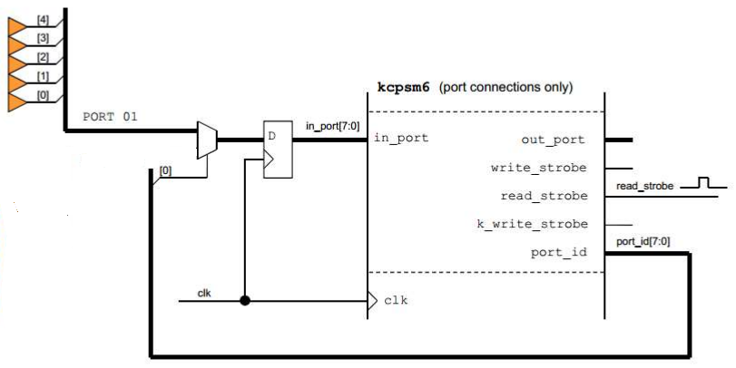
entity Input_Interface is
port( clk: in std_logic;
port01: in std_logic_vector(4 downto 0); -- 5 ulaznih jedinica
read_data: out std_logic_vector(4 downto 0));
end Input_Interface;
architecture Behavioral of Input_Interface is
begin
process(clk)
begin
if rising_edge(clk) then
read_data <= port01; -- registrirano čitanje 5 ulaza
end if;
end process;
end Behavioral;; PORT 01 je na adresi 0x01
START: INPUT s0, 0x01 ; čita svih 5 bitova jednom operacijom
STORE s0, R1 ; spremi u registar
; ... obrada ...
JUMP START ; ponavljajINPUT naredbom
(5 bitova istog porta). MUX/registar prije in_port osigurava sinkrono uzorkovanje. Više različitih
ulaznih jedinica dekodiralo bi se preko read_strobe + različitih port_id.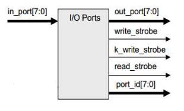
LOAD s0, 0x34 ; primjer podatka
OUTPUT s0, 0x20 ; pošalji na adresu 0x20 (write_strobe + port_id=0x20)
INPUT s1, 0x40 ; čitaj s adrese 0x40 (read_strobe + port_id=0x40)
STORE s1, R10